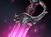
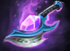
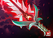
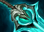
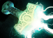
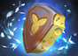
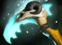
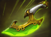

V0.1.1 · 单机版 · CUSTOM EQUIPMENT PATCH
神装之上再铸极限。
80% 状态抗性，让控制难以留住你。
三元重戟重铸登场，融合三剑与金箍棒的力量。
为突破而锻造 FORGED BEYOND LIMITS向下探索 ↓
01 / PERMANENT ASCENSION
力量入体，不再占格。
把装备锻造成英雄的一部分。
自动吸收，永久获得属于你的超限能力。
◇ 真视侦测不会揭开战争迷雾。吸收条件、适用单位及叠加限制，点击装备查看完整说明。
02 / THE REFORGED ARSENAL
传奇相融，锋芒再生。
熟悉的神装，全新的力量。
四件专属原画，四种战场答案。
MORE TO FORGE
不止于此。
03 / EVERY EDGE, SHARPENED
熟悉的装备，更进一步。
把数值交给图鉴，把战场留给你。
以下直接展示升级后的属性与技能数值。
| 装备 | 合成总价 | 升级后的主要数值 |
|---|---|---|
以太透镜·升级法术强化 | 3275 | 魔法值 +300；回蓝 +2.5/秒；施法距离 +800 |
 绝刃·升级法术强化 | 6600 | 生命 +450；魔法 +450；全属性 +8；回血 +7/秒；回蓝 +38/秒；法术强化额外伤害 250；减速 50%，持续 8 秒；冷却 4 秒 |
 秘奥闪光·升级机动控制 | 7800 | 智力 +200；闪烁距离 1400；回复生命 250、魔法 300；受伤禁用 0 秒；冷却 5 秒 |
强袭胸甲·升级防御续航 | 6125 | 攻速 +130；护甲 +60；1200 范围光环：友军攻速 +50、护甲 +15，敌军护甲 -15 |
 血棘·升级物理输出 | 7400 | 智力 +50；攻速 +195；攻击力 +20；回蓝 +13/秒；回血 +15/秒；冷却 7 秒 |
达贡之神力·升级（1–5 级）法术强化 | 1 级 4000；5 级 8400 | 全属性 +6/7/8/9/100；伤害 400/500/600/700/1800；施法距离加成 +60/90/120/150/580；冷却 27/24/21/18/5 秒 |
黯灭·升级物理输出 | 4500 | 攻击力 +55；减甲 16，持续 17 秒；每次击杀 +10、助攻 +5 攻击力；成长上限 3000 |
圣斧·升级法术强化 | 6075 | 智力 +100；攻速 +100；护甲 +28；回蓝 +10/秒；弹道速度 700；智力伤害系数 1；减速 50%，持续 12 秒；主动魔抗降低 100%；被动冷却 12 秒；主动冷却 0 秒 |
 散魂剑·升级物理输出 | 7100 | 敏捷 +100；智力 +100；每次攻击燃烧魔法 100；敌我主动效果均持续 10 秒；移速增益变化速率 5；耗蓝 5；冷却 5 秒 |
永世法衣·升级防御续航 | 4900 | 力量 +10；生命 +250；魔抗 40%；伤害转化魔法比例 50%；每层额外魔抗 3.5%，最多 6 层 |
虚灵之刃·升级法术强化 | 6200 | 全属性各 +50；虚灵伤害为 50 + 3 倍属性；冷却 10 秒 |
缚灵索·升级法术强化 | 5650 | 生命 +450；魔法 +200；智力 +100；作用范围 +375；耗蓝 50；冷却 6 秒 |
gunpowder_gauntlets·升级物理输出 | 1000 | 攻击力 +10；溅射范围 500；溅射伤害 100%；冷却 0 秒 |
鱼叉·升级物理输出 | 5700 | 攻击力 +125；力量 +75；敏捷 +75；智力 +100；回蓝 +10/秒；施法距离 1700；牵引比例 70%，最大距离 2000；被动冷却 2 秒；耗蓝 25；主动冷却 9 秒 |
飓风长戟·升级机动控制 | 5450 | 智力 +55；敏捷 +60；力量 +55；生命 +200；攻击距离 +750；推送距离 1600；对敌距离 450；攻击效果持续 16 秒、最多 15 次攻击；耗蓝 10；冷却 10 秒 |
清莲宝珠·升级防御续航 | 4850 | 护甲 +10；回血 +6.5/秒；魔法 +250；回蓝 +4/秒；回音之壳持续 3600 秒；耗蓝 25；冷却 5 秒 |
幻影斧·升级物理输出 | 5650 | 全属性各 +100；攻速 +30；移速 +25%；2 个幻象，持续 18 秒；近战/远程幻象输出 33%/28%，承受伤害 300% |
 雷神之锤·升级物理输出 | 6500 | 攻击力 +25；攻速 +180；静电护盾持续 360 秒，100% 触发、伤害 525；连环闪电 100% 触发、伤害 380；耗蓝 5；冷却 5 秒 |
银月之晶·升级物理输出 | 5000 | 持有：攻速 +140、夜间视野 +400；吞噬：永久攻速 +200、夜间视野 +1000 |
否决坠饰·升级法术强化 | 5350 | 攻击力 +75；护甲 +10；回血 +6/秒；否决持续 20 秒；弹道速度 4800 |
盛势闪光·升级机动控制 | 7800 | 力量 +85；闪烁距离 1200；受伤禁用 0 秒；冷却 7 秒 |
辉耀·升级物理输出 | 5700 | 攻击力 +100；闪避 25%；灼烧范围 850；每秒伤害 160，幻象每秒伤害 100 |
圣剑·升级物理输出 | 6600 | 基础攻击力 +500；切换获得额外攻击力 +550 或技能增强 +100%；死亡掉落 |
英灵胸针·升级物理输出 | 4300 | 攻击力 +135；技能吸血 34%；幻影暴击概率 45%，额外魔法伤害为攻击伤害的 150% |
 奶酪块·升级防御续航 | 1002 | 护盾 1000；恢复等待 0 秒；效果持续 50 秒 |
 邪恶镰刀·升级法术强化 | 6200 | 智力 +150；回蓝 +18/秒；妖术 5 秒；施法距离 1800；耗蓝 50；冷却 10 秒 |
希瓦的守护·升级防御续航 | 5500 | 护甲 +50；作用范围 +400；1200 范围光环降低攻速 140；极寒冲击伤害 260，减速持续 10 秒，半径 1200，扩张速度 600 |
白银之锋·升级物理输出 | 6700 | 攻击力 +140；攻速 +90；力量 +30；智力 +30；回蓝 +10/秒；隐身 60 秒、移速 +25%；破坏持续 16 秒；冷却 10 秒 |
林肯法球·升级防御续航 | 5800 | 全属性 +56；回血 +15/秒；回蓝 +10/秒；被动法术抵挡冷却 5 秒；主动冷却 7 秒 |
 迅疾闪光·升级机动控制 | 7800 | 敏捷 +85；闪烁距离 1200；主动移速 +40%、敏捷 +35，持续 6 秒；受伤禁用 0 秒；冷却 7 秒 |
风之杖·升级机动控制 | 7800 | 移速 +60；回蓝 +10/秒；智力 +200；龙卷风持续 2.5 秒；耗蓝 25；冷却 7 秒 |
暂时没有匹配的装备。试试其他关键词，或切换到全部装备。
数值整理自项目当前配置。特定技能交互与叠加效果，以游戏实际表现为准。
V0.1.1 / 2026.10.21
这次更新
真视宝石改为 0 金成品直售，删除升级配方；单机版保留高空视野。龙息溅射优先使用行家阵列 + 100 金卷轴，狂战斧 + 100 金卷轴作为第二路线。
新增独立联机版，仅包含免费全图反隐宝石。查看联机版 →
YOUR NEXT BUILD STARTS HERE
下一场，带上超限武装。
先看安装说明，再下载最新版补丁。
INSTALLATION / 安装说明
三步，进入战场。
- 01点击下方按钮下载
pak02_dir.vpk，并完全退出 Dota 2。 - 02将补丁包放入下面的文件夹；若已有同名文件，先备份再替换。
- 03安装完成后重新启动游戏。
X:\SteamLibrary\steamapps\common\dota 2 beta\game\dota_schineseX: 请替换为你的 Steam 游戏库实际所在盘符。最终文件位置为上述目录下的 pak02_dir.vpk。